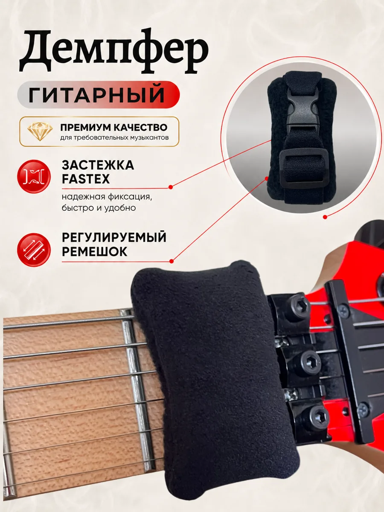
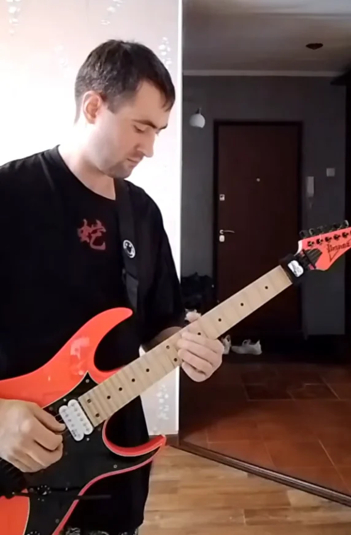
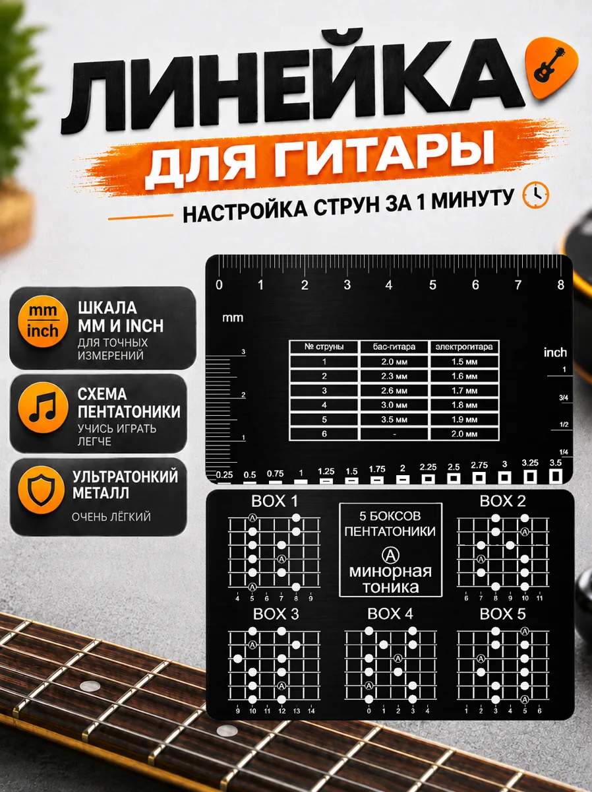
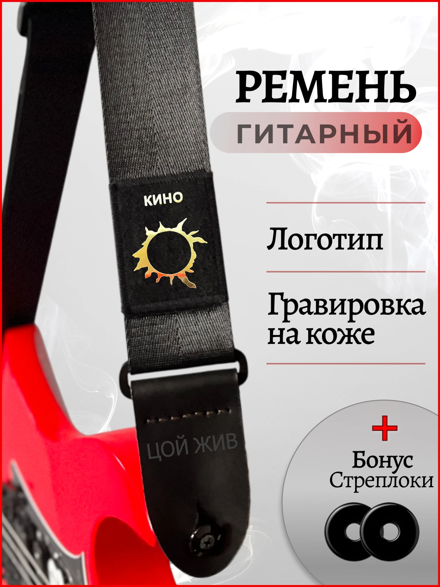
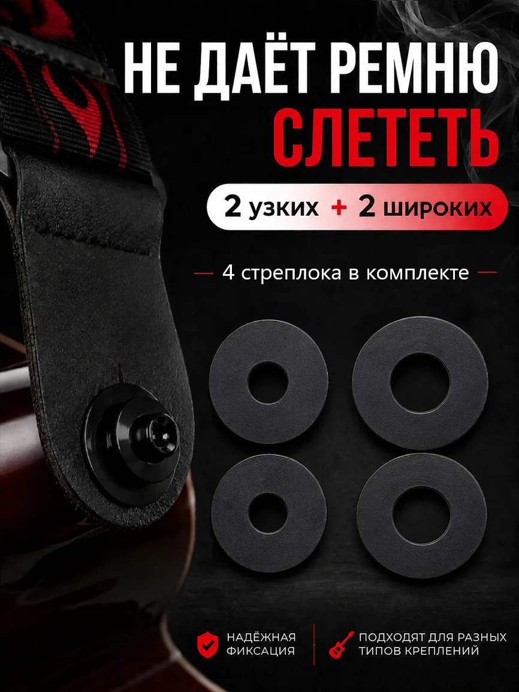
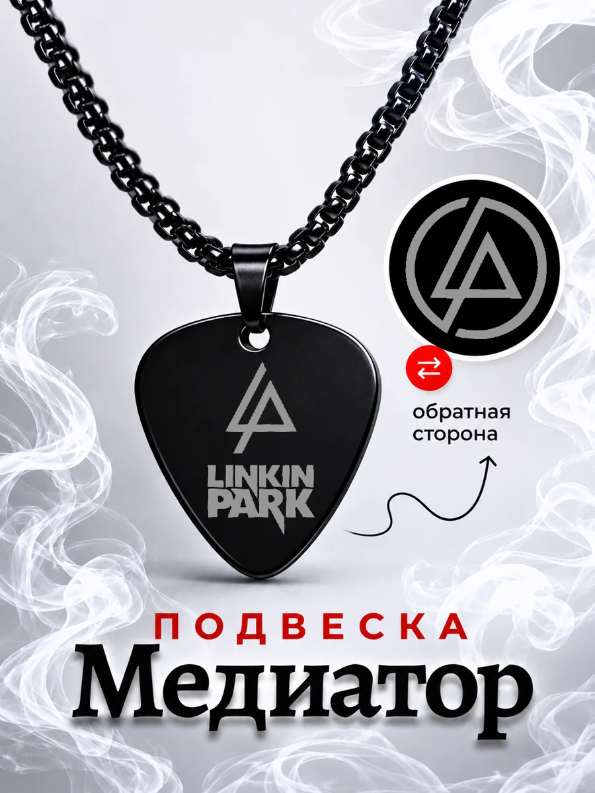

01 / ДЕМПФЕРДемпфер для гитары
01Для приглушения открытых струн и более чистого звучания при игре. С этого изделия началась история BigNest.
Смотреть на Ozon ↗BigNest — гитарные аксессуары, которые я придумываю и делаю сам. От первой идеи до вещи, которая становится частью твоей музыки.

Аксессуары для практики, сцены и повседневной жизни. Витрина без цен — подробности и покупка в магазине BigNest на Ozon.

01 / ДЕМПФЕРДля приглушения открытых струн и более чистого звучания при игре. С этого изделия началась история BigNest.
Смотреть на Ozon ↗
02 / ИНСТРУМЕНТЫКомпактный помощник для измерений, настройки высоты струн и работы с инструментом.
Смотреть на Ozon ↗
03 / РЕМНИУдобные ремни с регулируемой длиной и продуманными деталями крепления.
Смотреть на Ozon ↗
04 / КРЕПЛЕНИЯ
05 / ROCK STYLEМузыкальная эстетика, которую можно носить с собой — подвески для поклонников рока.
Смотреть на Ozon ↗Небольшие аксессуары с музыкальным настроением, которые всегда под рукой.
Смотреть на Ozon ↗Всё началось с желания сделать для себя удобный гитарный демпфер с символикой любимой музыкальной группы. Потом появилась идея создавать и другие аксессуары — не просто наносить логотип на готовые безымянные вещи, а придумывать и изготавливать их самостоятельно.
У названия тоже своя история. Я обдумывал вариант, связанный с моим именем, а сын неожиданно предложил BigNest. Мне понравилось — так у проекта появилось имя.
Сейчас я сам изготавливаю гитарные демпферы, линейки, ремни, стреплоки, брелоки и кулоны. А игра на электрогитаре остаётся неотъемлемой частью всего, что я делаю.
Идеи для аксессуаров рождаются из практики и увлечения гитарой.
Изделия собственной линейки я изготавливаю сам, а не просто переименовываю чужие товары.
Рок и электрогитара здесь не оформление витрины, а часть моей жизни.
Реальные слова покупателей из отзывов на Ozon. Без придуманных оценок и историй.
★★★★★«Демпфер годный, спасибо! На восьмиструнную гитару как раз подошёл.»
★★★★★«Хорошо глушит струны»
★★★★★«Размера банковской карты, тонкая, почти невесомая, карман точно не обременит. Но прочная, гибкая.»
★★★★★«Свою функцию выполняют, ремень зафиксирован плотно.»
★★★★★«Очень классный ремень. Доволен покупкой как слон.»
★★★★★«Подвеска Супер 🥰🥰🥰»
Играю каверы на электрогитаре, делюсь музыкой и иногда снимаю обучающие видео. Здесь — несколько моих Shorts.
Видео открываются на YouTube в новой вкладке. Доступность воспроизведения зависит от региона и настроек YouTube.
Про аксессуары, заказ или просто гитарные темы — пиши в VK или Telegram. По вопросам покупки можно связаться через Ozon.